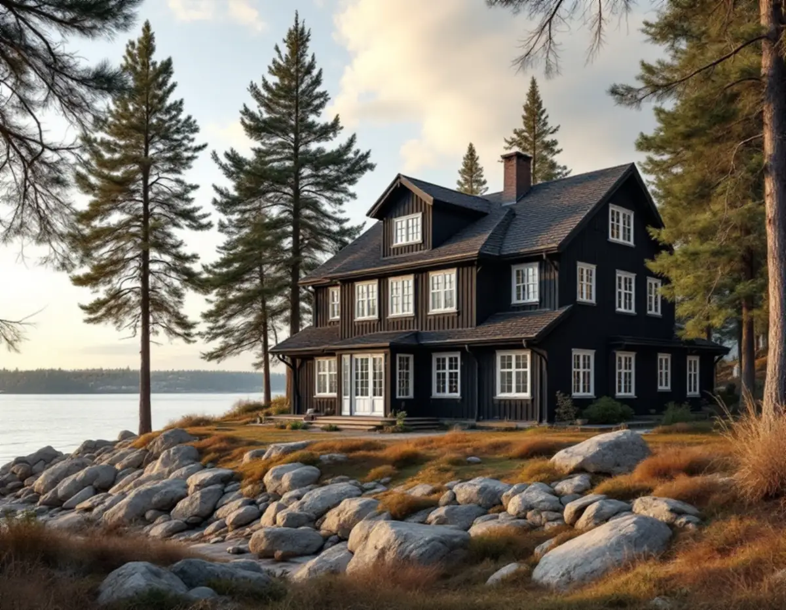

Inventering
Varje fönster får en rad i en lista med skick och föreslagen åtgärd.
Villorna i Gamla Djursholm vid Stora Värtans strand spänner från 1890-talet till 1960-talet, och fönstren är lika olika som husen. Geal Entreprenad AB renoverar fönster i Djursholm, Stocksund och resten av Danderyd. Vi börjar med att gå igenom varje fönster för sig, eftersom en villa ofta har bågar som bara behöver bättras bredvid bågar som måste lagas.

Danderyds kulturmiljöhandbok beskriver kvarteren Delling och Gamla Djursholm vid Stora Värtans strand som platsen för några av Djursholms arkitekturhistoriskt mest intressanta villor. Där finns en stor brunmålad trävilla från 1890-talet, en medeltidsromantisk tegelvilla, en putsad klassicistisk villa från 1920-talet och en nästan brutalistisk betongvilla. Området är av riksintresse för kulturmiljövården och betraktas som särskilt värdefullt ur kulturhistorisk synpunkt.
För fönstren betyder det att varje hus har sin egen tradition, och att en renovering måste utgå från det enskilda huset snarare än från områdets genomsnitt. Detaljplanerna är enligt handboken från 1937–1997, och Delling 2, 3 och 4 omfattas av q-bestämmelser. Delling 4 vid Strandvägen 37 räknas som omistlig, vilket betyder att eventuella förändringar måste ske med mycket stor hänsyn till byggnadens egenart.
Plan- och bygglagen säger i 8 kap. 14 § att ett byggnadsverk ska hållas i vårdat skick och underhållas så att utformningen och de tekniska egenskaperna i huvudsak bevaras. Är byggnaden särskilt värdefull ska den underhållas så att de särskilda värdena bevaras. Kulturmiljöhandbokens allmänna del, skriven utifrån den äldre lagens motsvarande regel, säger att stor vikt ska läggas vid att den ursprungliga exteriören inte förändras genom till exempel byte av fönster, att underhållet sker varsamt med traditionella material och metoder och att man försöker bevara de ursprungliga materialen, som med sin ålder och patina berättar om äldre hantverksskicklighet och byggnadsteknik.
För fönstren tolkar vi det som linoljefärg och linoljekitt snarare än plastfärg och fogmassa. Riksantikvarieämbetets skrift om fönster beskriver linoljekittet som en knådbar massa av linolja och krita, som håller väl på en linoljegrundad båge men torkar snabbare och ofta spricker på en ogrundad. Erfarenheterna av nyare syntetiska kittyper bedöms där som för små för att de ska rekommenderas vid en antikvarisk renovering. Handboken ger också ett råd åt andra hållet: att försöka rätta till kulturhistoriskt och miljömässigt olämpliga förändringar från senare tid.
Riksantikvarieämbetet råder att arbetet börjar med en systematisk besiktning och analys av varje fönster för sig, när det är oklart om fönstren behöver vanligt underhåll eller större reparationer. Utan besiktning är det enligt skriften alltför lätt att döma ut fönster som mycket väl skulle gå att bevara. På samma hus finns ofta både fönster som bara behöver en lätt underhållsmålning och fönster där all färg bör bort, och ett söderfönster kan behöva målas om oftare än ett fönster mot andra väderstreck.
Vi noterar för varje fönster färgens skick, kittet, eventuell röta i bottenstyckena och hur bågen hänger. Inventeringen blir underlaget för ett kostnadsförslag där varje fönster har sin egen åtgärd. Den gör det också möjligt att dela upp arbetet över flera säsonger, med de mest utsatta fasaderna först och de skyddade fönstren senare.
Skriften påpekar att justering och rengöring av beslag är lika viktigt för fönstrets funktion som målning och kittning. Kärvar en båge ökar risken för att gammalt glas spricker och att tappar och fogar skadas, och den blir svår att få tät. Gångjärn kan i enklare fall rättas med en gångjärnsriktare, och koppelhakar rengörs från rost och färg. I hus som har satt sig kan karmen behöva lossas och rätas, men först ska man ta reda på om sättningarna har avstannat. Ett fönster i en vägg som lutar ska följa väggen och inte sättas i lod.
Ibland räcker inte en renovering. Boverket skriver att fönster i dåligt skick kan behöva bytas, och att ett byte även kan bidra till att återställa utseendet på en förvanskad byggnad. Hur klassning och lovplikt påverkar ett byte i kommunen beskriver vi under fönsterbyte i Danderyd, och mer om nya fönster finns på sidan om fönsterbyte. Ska fasaden runt fönstren målas, se fasadmålning i Danderyd.
Varje fönster får en rad i en lista med skick och föreslagen åtgärd.
Vi läser områdesbladet i kulturmiljöhandboken och detaljplanens bestämmelser för fastigheten.
Du ser åtgärden för varje fönster och kan välja ordning och etapper.
Löst kitt och lös färg tas bort, falsarna grundas och bågarna kittas med linoljekitt.
Gångjärn riktas, koppelhakar rengörs och stängningen justeras.
Sista strykningen läggs tunt och vi provar att varje båge går lätt och sluter tätt.
Skatteverkets lista över rotarbeten tar upp att reparera fönster, montera isolerglas och måla fönster på ett småhus. Avdraget förutsätter att du äger huset under den tid arbetet utförs, och det är företaget som gör avdraget på fakturan.
Avdraget är 30 procent av arbetskostnaden, högst 50 000 kr per person och år och högst 75 000 kr tillsammans med rutavdrag. Kitt, färg, glas och andra material räknas inte in.
Antalet fönster och deras storlek, hur många som behöver lagas med nytt virke, beslagens skick, om gammalt glas ska bevaras vid omglasning och hur lätt fönstren på övervåningen går att nå styr kostnaden. Inventeringen gör att kostnadsförslaget kan anges fönster för fönster.
Byta eller renovera fönster.
Fönsterbyte i Stockholm →Takbyte, takbesiktning och plåtarbeten.
Takläggare i Danderyd →Djursholm, Stocksund och Enebyberg.
Takrenovering i Danderyd →Villastäder, lovplikt och strandskydd.
Attefallshus i Danderyd →Tillbyggnad, tomt och kommunens riktlinjer.
Byggföretag i Danderyd →Kalkfärg på puts, linoljefärg på trä.
Fasadmålning i Danderyd →Villastäder, egnahem och grupphus i Danderyd.
Fasadrenovering i Danderyd →Lovplikt, klassning och spröjs i Danderyd.
Fönsterbyte i Danderyd →Villastäder, ritningar och ventilation.
Badrumsrenovering i Danderyd →Originalgolv i villor från 1890-talet och framåt.
Golvläggare i Danderyd →Slipa parkett och mönstergolv i villan.
Golvslipning i Danderyd →Villastäder, egnahem och kommunens regler.
Köksrenovering i Danderyd →Villor, egnahem och grupphus i Danderyd.
Målare i Danderyd →Rännor, stuprör och beslag i Danderyd.
Plåtslagare i Danderyd →Altaner, staket och carport.
Snickare i Danderyd →Villastaden, takmaterial och solceller.
Takbyte i Danderyd →Tapet och papptak i äldre villor.
Tapetsering i Danderyd →Funkis, grupphus och 1950-talsvillor.
Tillbyggnad i Danderyd →